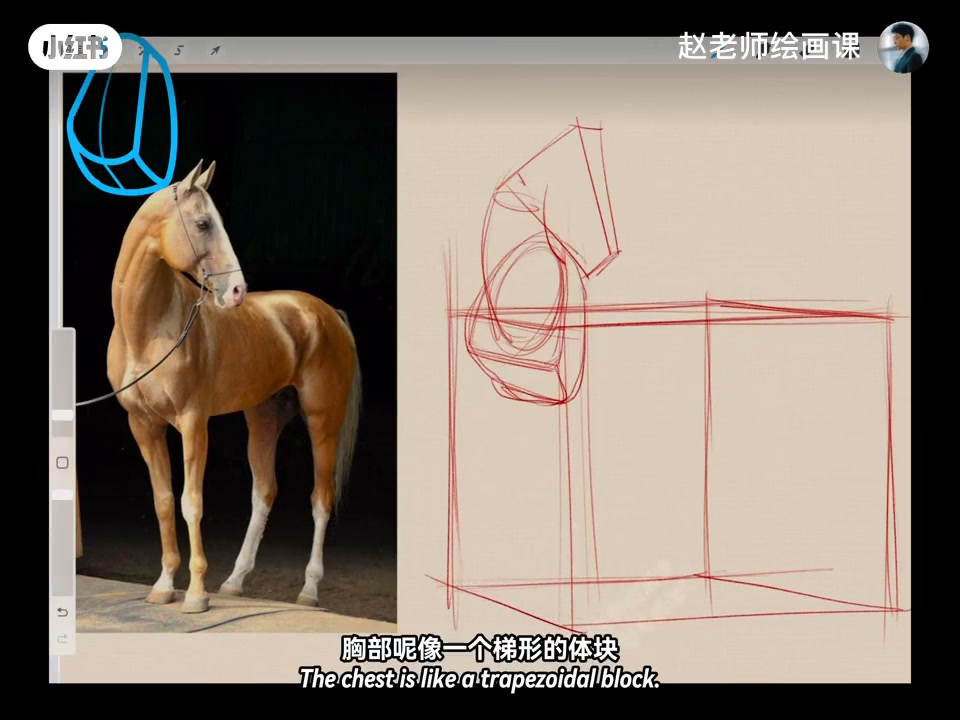
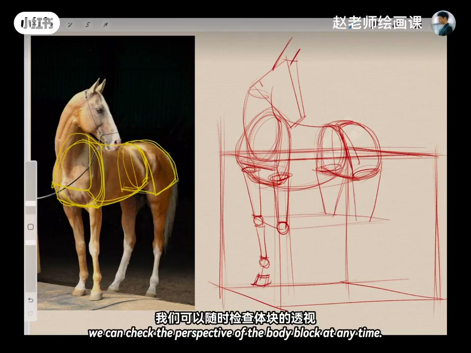
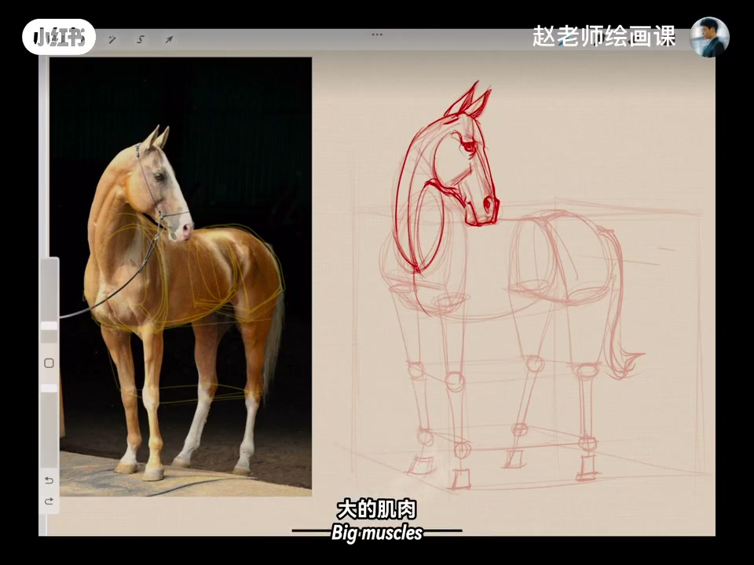
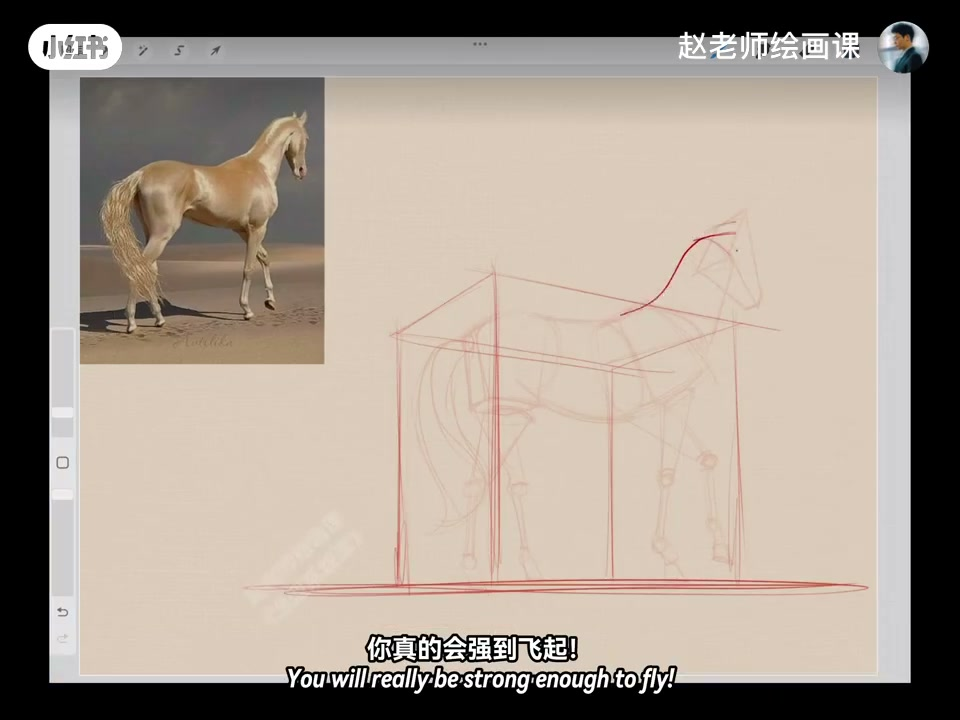

内容要点
把马看成不同几何体块，一切变简单：假设马站在方盒子里——头似棱锥、颈像弯曲圆柱、胸梯形、腰为两头大小不同的弯曲圆柱、臀为切面半圆体块；方盒随时检查透视。大腿扁圆柱、小腿棱柱，头可再细分。有体块支撑，细化、大肌肉附着与光影都更好理解；蹄子注意结构与透视形变。还可换仰视角度持续练。
知识结构
方盒＋棱锥／圆柱／梯形／半圆；检查透视。
肌肉与光影附着体块；仰视再练。
复杂动物先装进方盒并拆成标准体块，透视与光影才有附着点——几何体是造型的脚手架。
00:00-00:42方盒里的马：体块拆解
如果把这匹马看成不同几何体块，一切会变得简单。假设马站在方盒子里：头部类似棱锥体，脖子像弯曲圆柱，胸部像梯形体块，腰部是弯曲但两头大小不一样的圆柱，屁股看成切面半圆体块。通过方盒子可随时检查体块透视。
大腿是扁一点的圆柱，小腿是棱柱；头部还可稍微再细分。00:15「胸部像梯形的体块」是拆解现场。


00:42-01:34体块之上的细化与换角
有了体块支撑，细化会很轻松：大的肌肉很容易附着在上面，光影也会因为体块更好理解。蹄子要注意结构与透视带来的形变；再轻松加几笔细节就完成——这就是几何体块的魅力。
还可换一个仰视角度不断练习，你会真的强到飞起。系统学习指向造型课程。


完整转录（30段）
以下文本由 Whisper medium 模型自动转录，可能存在少量识别误差，已尽可能修正。
如果把这匹马看成不同的几何体块
那一切会变得简单起来
我们假设马站在一个方盒子里
头部类似一个棱椎体
脖子像一个弯曲的圆柱
胸部像一个梯形的体块
腰部也是一个弯曲的
但两头大小不一样的圆柱
屁股我们来看成一个切面的半圆体块
通过方盒子
我们可以随时检查体块的透视
大腿是扁一点的圆柱
小腿是棱柱
头部我们可以稍微再细分几何体块
有了体块的支撑
细化就会很轻松
大的肌肉会很容易的附着在上面
光影也会因为体块而变得更好理解
蹄子在画的时候要注意结构
和透视带来的形变
再轻松加几笔细节就完成了
很简单吧
这就是几何体块的魅力
我们还可以换一个仰式的角度
不断这样进行练习
你真的会强不到飞起
如果你也想通过系统学习
全面提升自己的造型能力
我们2月2日合掌见
拜拜